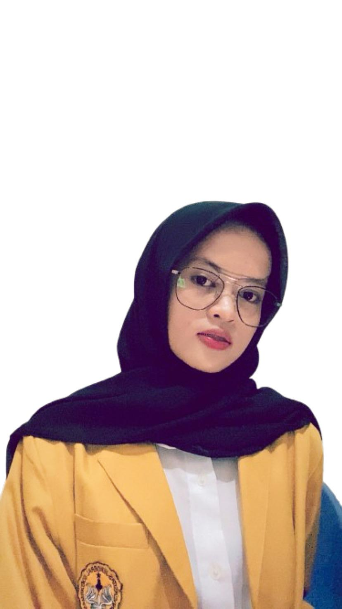
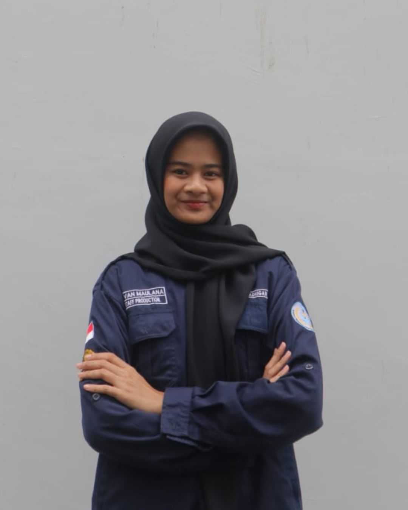

Tim & Relawan
Orang-orang di balik Green Circle

M. Yazid Nugraha
Founder & CEO
Environmental scientist with 15+ years experience in ecosystem restoration.

Nadine Ariesta
Director of Operations
Specialist in sustainable community development and green infrastructure.

Salma Faizatul J.
Head of Marine Conservation
Expert in coral reef restoration and coastal ecosystem management.

Zainab Feizia
Head of Terrestrial Ecosystems
Specialist in forest restoration and wildlife conservation programs.

Talitha Novelia S.
Head of Community Engagement
Expert in environmental education and grassroots movement development.